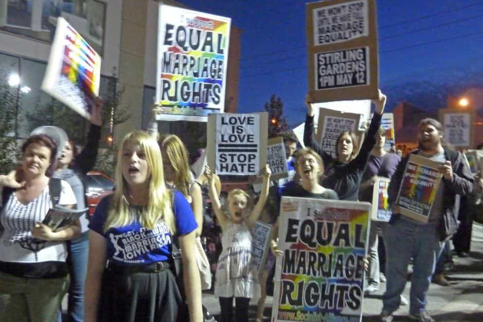

< < < Back
American Corporations Only Support Gay Marriage When They Can Profit From It – Return Of Kings
We are always told that major corporations such as Facebook, Starbucks, and Apple are at the vanguard of supporting equality for gay, lesbian, bisexual, and transgender individuals. Yet they have a funny and very asymmetrical way of showing this commitment throughout the world. Starbucks in particular has become a for-profit behemoth wanting to act like a gay charity in the US, all while categorically ignoring the notion of gay marriage (or even gay rights) in countries as far afield as Japan, China, and Saudi Arabia.
It gets worse, though. These same sorts of companies were amongst the 379 filing pro-gay marriage friend-of-the-court briefs in the US Supreme Court case of Obergefell v. Hodges last year, which legalized gay marriage. Yet why did it take them so long to organize together for gay marriage in the United States? Why did they not vocally “come out” in support of it many years ago when only a fraction of Americans supported non-traditional marriage? “Human rights” should not depend on popularity, especially in places like America where violence against gays and their supporters has been infinitesimally small for decades. Consequently, the behavior of these corporations is more akin to flagrant opportunism than a deep-seated and real conviction about alleged human rights.
What we can draw from this situation is that major commercial concerns marketing to vast sections of the public will only declare their passion for gay marriage and similar policy proposals when it will not harm attempts at profit-making. This will also be done entirely selectively (i.e. “We support gay marriage and gay rights in America, but will say absolutely nothing about it in other countries we do business in.”) So this means a certain number of consumers have to support something first, regardless of what corporate leaders themselves think. Moreover, when a few companies begin to support gay marriage, hundreds of others follow, wanting to literally cash in on the trend-leadership of the first to do so.
Starbucks and other companies operate in gay-beheading Saudi Arabia but are demanding an end to “homophobia” in America
I am presuming Starbucks’ desired expansion into Iran will not include demands for an end to the execution of gays, like these teenagers about to be killed in Tehran by the Iranian government.
Starbucks is one of many corporations that legitimizes the execution and maiming of gays by engaging in mutually beneficially partnerships with the governments of Saudi Arabia, the small Persian Gulf States and, more recently, Iran. When has it ever threatened to stop opening stores or even close current ones in protest at the treatment of LGBT people? In the meantime, Middle America has been excoriated by SJWs and corporations for their resistance to changing the traditional formulation of marriage. In no time in human history has the word “homophobia” been less applicable than it is today in the US, yet it is being used more than ever before.
The hypocrisy could not be starker. Run-of-the-mill Americans who peacefully disagree with gay marriage but have never engaged in any anti-gay violence are demeaned as bigots while CEOs and their senior colleagues treat the political leaders of a raft of oppressive regimes as necessary partners. Starbucks, Apple, and those of their ilk are more concerned with the Christian values of a plumber in Tennessee than the Middle Eastern Sheikh responsible for keeping local laws allowing the killing and beatings of gays.
Where were you years ago, Tim Cook?
It is pretty easy to keep silent on gay rights for years, even as a gay man like Tim Cook, when the millions keep coming in.
For those of you not aware, Tim Cook is the gay CEO of Apple, having succeeded the late Steve Jobs. He publicly came out as gay only in October 2014 and when the Supreme Court supported gay marriage the following June, he was quick to applaud the decision. But why did he publicly announce his sexuality, let alone his support for gay marriage, so late? This man has been a multimillionaire for years, let’s remember. It seems awfully dollar-related if you significantly hold back your supposedly screaming support for gay marriage until the time of a court decision. And it also justifiably arouses suspicion when your sudden activism coincides with other corporations deciding that support for gay marriage might actually enhance company profits.
Even before he took over from Jobs, as an Apple executive Cook was at the forefront of lobbying for tax concessions and other perks for the electronics giant. These efforts have been so successful and pervasive that Apple pays no functional tax in medium-sized countries like Australia. Decidedly less energy seems to have been spent in the past arguing for the “rights” of the LGBT individuals Cook now conveniently champions.
To boot, commentators have stated that Cook was open about his sexuality within the upper echelons of Apple for years. He was clearly not personally afraid of being known as gay, despite his much, much later public admission of it. God forbid, did the raking in of millions take a backseat to the LGBT community?
A pro-gay rights corporation should put its money where its mouth is

Starbucks and Apple show solidarity with these entirely safe gay rights advocates in Western countries, but none with actually persecuted gays in regions like the Middle East.
Either you support gay marriage and gay rights or you do not. Middling positions, including castigating harmless Christians for wanting to protect their religious traditions in America whilst implicitly sanctioning the beheading, hanging, and mutilation of gays in the Middle East, only underscore that dollar signs are driving every single action taken by corporations in the arena of gay advocacy.
Many other more homophobic societies than America, including China, Japan and Korea, are given a pass by Apple, Starbucks and their fellow corporate giants, who are all keen not to offend very large but traditionally-minded markets for their products. Instead, they just continue to beat the dead-horse of “dangerous” white Western homophobia. A cash cow is a cash cow.
Physical prostitution is illegal in most American jurisdictions, but America’s corporate elite will never be short of willing but highly selective political whores. Gay marriage and “gay rights” promotion is just the tip of the iceberg.
 If you like this article and are concerned about the future of the Western world, check out Roosh's book Free Speech Isn't Free. It gives an inside look to how the globalist establishment is attempting to marginalize masculine men with a leftist agenda that promotes censorship, feminism, and sterility. It also shares key knowledge and tools that you can use to defend yourself against social justice attacks. Click here to learn more about the book. Your support will help maintain our operation.
If you like this article and are concerned about the future of the Western world, check out Roosh's book Free Speech Isn't Free. It gives an inside look to how the globalist establishment is attempting to marginalize masculine men with a leftist agenda that promotes censorship, feminism, and sterility. It also shares key knowledge and tools that you can use to defend yourself against social justice attacks. Click here to learn more about the book. Your support will help maintain our operation.
Read More: Avoid Women Who Support Gay Marriage